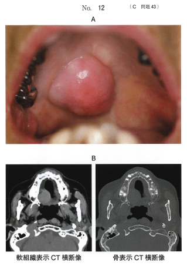

CT（コンピュータ断層撮影法）は、エックス線管と検出器を患者の周りで回転させながら撮影し、コンピュータで断層像を再構成する検査法。
エックス線管と検出器が連続回転しながら、テーブルが一定速度で移動する方法。短時間でボリュームデータを取得できる。
多数の検出器を並べ、エックス線管が1回転で複数スライスのデータを同時に取得する方法。現在の主流。
CT値は組織のエックス線吸収係数を水を基準として数値化したもの。
| 組織 | CT値（HU） | 特徴 |
|---|---|---|
| 空気 | -1,000 | 最も低吸収（黒く見える） |
| 脂肪 | -100前後 | 0より低い唯一の軟組織 |
| 水 | 0 | 基準値 |
| 筋肉 | 30〜70 | 軟組織の代表 |
| 皮質骨 | 1,000〜2,000 | 高吸収（白く見える） |
0よりも低いCT値を示すのはどれか。1つ選べ。
【解説】CT値は水を0 HUとする。脂肪は約-100 HUで、軟組織の中で唯一0より低い値を示す。筋肉・リンパ節は30〜70 HU、皮質骨・エナメル質は1,000 HU以上。「0より低い」と聞いたら脂肪を選ぶ。
口蓋部の腫脹を主訴として来院した患者の初診時の口腔内写真（別冊No.12A）とCT（別冊No.12B）を別に示す。
CT値が病変内部と最も近いのはどれか。1つ選べ。

【解説】画像から病変の濃度を読み取り、CT値を推定する問題。病変が軟組織と同程度の濃度（灰色）を示していれば筋肉（30〜70 HU）に近い。水様であれば0 HU、脂肪であれば-100 HU前後となる。
CT画像の表示条件を調整する設定。同じデータでも設定により見え方が変わる。
| 観察対象 | WW | WL |
|---|---|---|
| 軟組織（脂肪・筋肉） | 300 | 40 |
| 硬組織（骨・歯） | 3,500 | 300 |
高吸収の組織を観察するときほど、WW・WLともに大きくする。
CTで得られたボリュームデータから様々な画像を作成できる。
ヨード製剤を静脈内に投与し、血管や血流の豊富な組織のコントラストを増強させる検査。